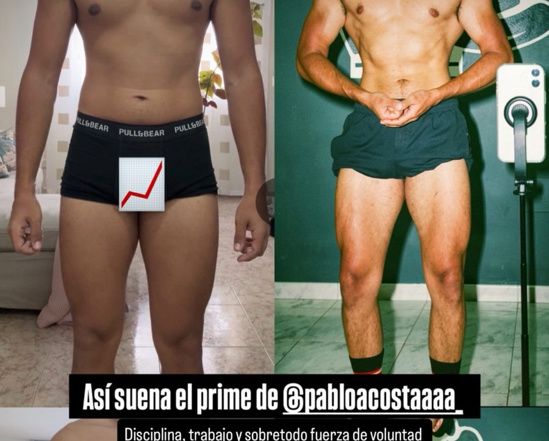
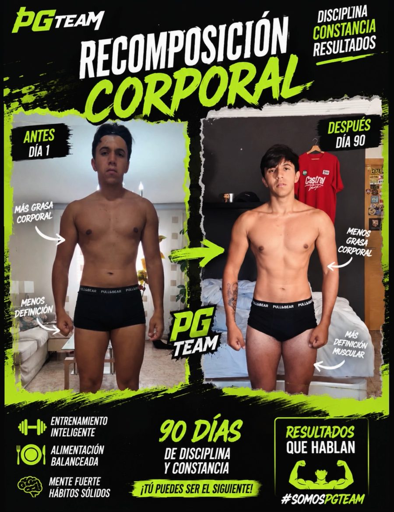
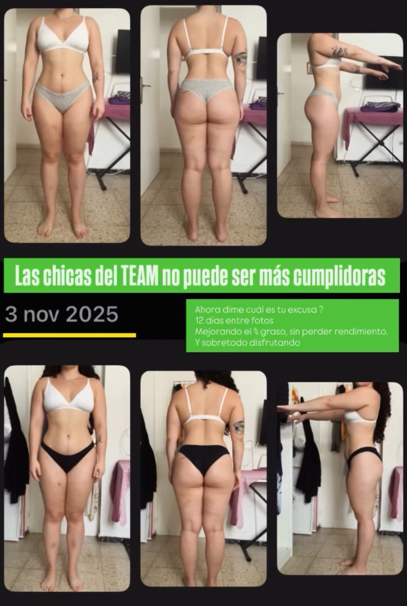

Recomposición · 2 mesesPablo"Disciplina, trabajo y sobre todo fuerza de voluntad."
Aunque tengas poco tiempo, creas que llegas tarde o lleves años estancado. Ni volumen eterno ni definición eterna: un plan que encaja en tu semana y que ajustamos cada semana con datos.

55 kilos, 1,70 y barriga. Flaco y blando a la vez. En la playa pedía las fotos de lado o con camiseta ancha. Ese verano dije: hasta aquí.
Rutina, dieta y cardio copiados de un influencer. Seis días a la semana sin plan. Subí 20 kilos y me creí fuerte.
El círculo: un año de volumen comiendo todo lo que pillaba, luego definición pasando hambre. +20, −24. En volumen "qué fuerte estás"; en definición "¿estás enfermo?". Nunca tuve abdominales.
Dejé de improvisar: plan, datos y alguien que me guiara. Me propuse competir en natural… y llegué al mejor físico de mi vida.
Hago con el PG TEAM lo que me habría ahorrado 8 años. Mi primer cliente fue mi hermano pequeño. Comida variada, sin alimentos prohibidos y sin dietas de culturista.
No necesitas entrenar más: necesitas entrenar mejor. No necesitas pasar hambre: necesitas un plan que se adapte a tu vida.
3–4 sesiones bien hechas, cargas registradas y progresión semana a semana.
Sin alimentos prohibidos ni menús de culturista. La dieta se adapta a ti, no al revés.
Fotos, cintura y cargas. Se acabó el "¿subo o bajo?": decidimos con números.
Ordenamos comida y entreno, técnica y punto de partida medido.
La cintura baja mientras las cargas suben. Revisión cada semana.
Aprendes a ajustar solo y decidimos tu siguiente etapa.


Boceto: casos sacados de las stories de Sergio, tal y como están publicados. Antes de subir la web: permiso por escrito de cada cliente, confirmar si el caso de 2 meses y el de 90 días son la misma persona (Pablo), y añadir el caso de Virginia (49 años, −11 kg en 2 meses) solo con fotos y permiso.
2 minutos: tu situación, tus horarios y qué quieres conseguir.
En menos de 24 h, para agendar una llamada de 20 minutos.
En la llamada vemos tu caso y si el PG TEAM encaja contigo.
Sí, sobre todo si llevas tiempo entrenando sin plan, si vuelves después de un parón o si tienes algo de grasa que perder. Es lo que llamamos recomposición: la cintura baja mientras las cargas suben.
Está pensado para eso: 3–4 entrenos a la semana y una versión de 2 entrenos para las semanas malas.
No. Comida variada, con alimentos que ya comes y sin nada prohibido. Ajustamos cantidades, no tu vida.
No. Ajustamos el volumen de entreno y la recuperación a tu edad y a tu trabajo. Una de mis clientas empezó con 49 años.
[Confirmar con Sergio: online para toda España y presencial en Canarias.] El seguimiento es semanal por app y WhatsApp.
Depende de la modalidad y de tu caso. Te lo explico en la llamada, sin compromiso.